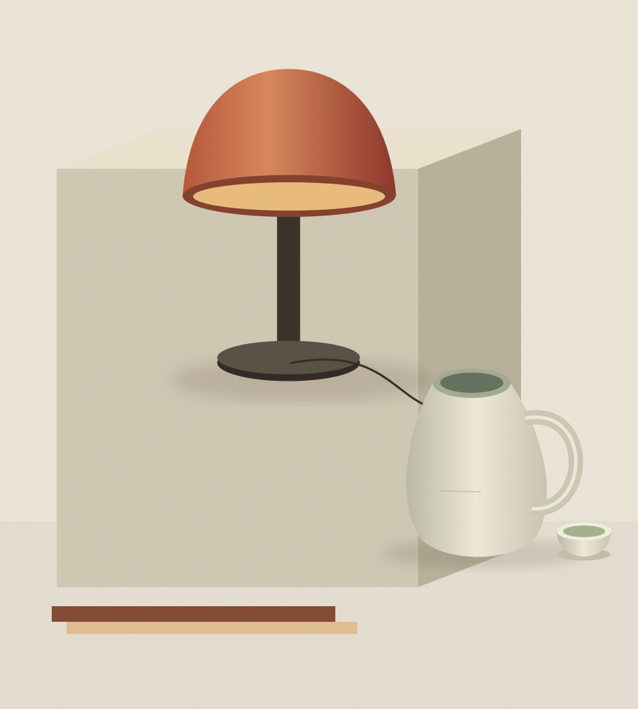

01 / 照明
01 / 照明暮光 · 桌灯
¥680柔和漫射光 / 可调灯头

LESS, BUTOUR EVERYDAY FAVOURITES
01 / 照明柔和漫射光 / 可调灯头
 02 / 陶瓷
02 / 陶瓷手工施釉 / 一壶一杯
 03 / 家具
03 / 家具实木框架 / 编织坐面
MATERIALS WITH A MEMORY
木头的纹理，陶器的细小色差，亚麻洗过后的柔软。我们喜欢这些不必整齐划一的细节，也相信被长期使用的东西，会拥有属于你的故事。
关于格物让触感与材质自己说话，不用过多装饰，掩盖一件器物原本的美。
顺手、舒适、容易照料。好看之外，我们同样关心每一次使用的感受。
减少一时兴起的选择，找到那些愿意陪你度过很多季节的东西。